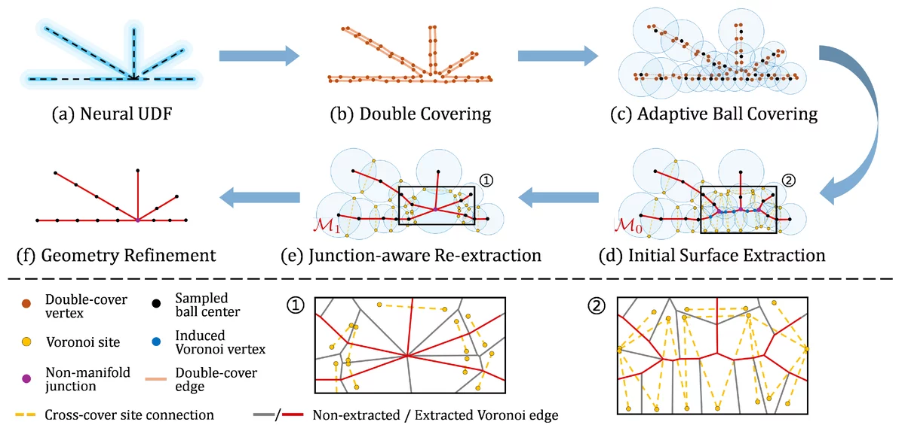
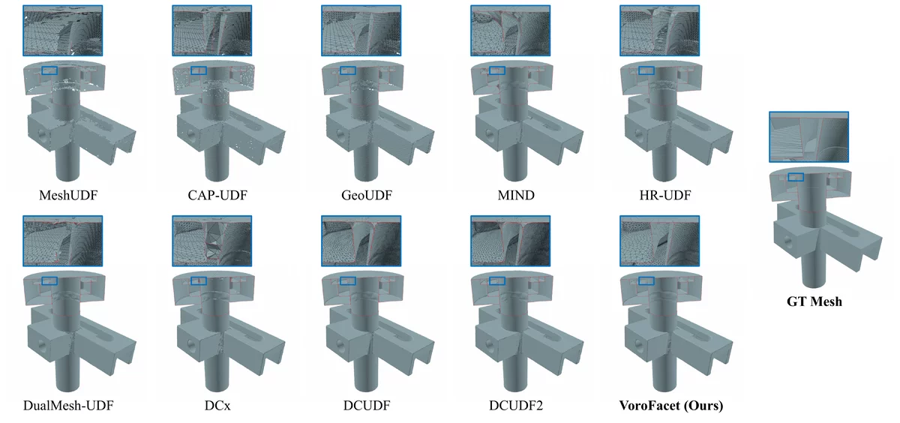
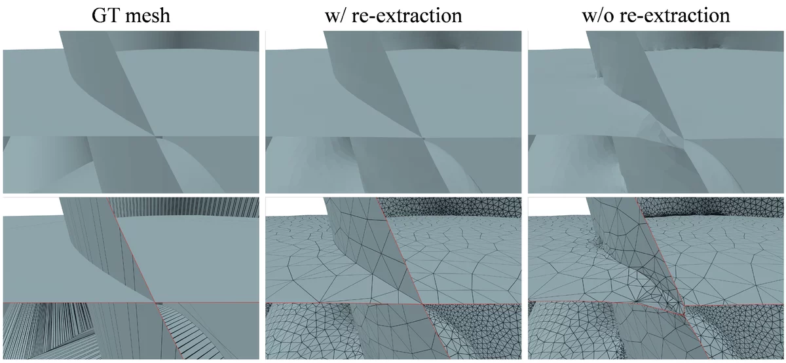
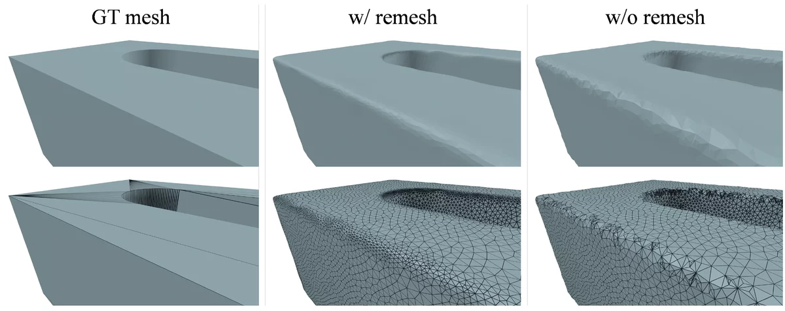
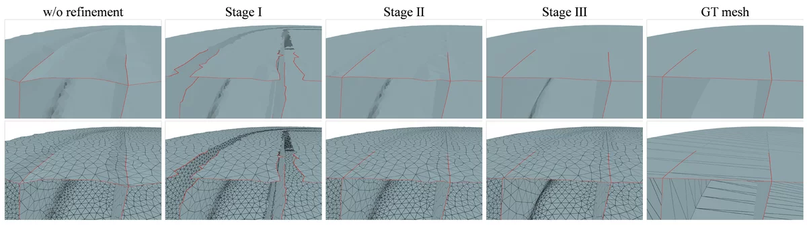

VoroFacet: Junction-aware Mesh Extraction
from Neural Unsigned Distance Fields
Under double-blind review
Single-layer meshes from neural UDFs, with incident sheets joined along shared junctions.
Abstract
Unsigned distance fields (UDFs) can represent surfaces of arbitrary topology, but recovering mesh connectivity from neural UDFs remains challenging, especially at non-manifold junctions where multiple sheets meet. To this end, we propose VoroFacet, a novel pipeline that extracts single-layer meshes from neural UDFs and reconstructs junction connectivity accurately through Voronoi facets. Specifically, we first use a near-surface double-layered proxy derived from the UDF as a local spatial partition for facet selection, where the facets belong to the Voronoi diagram of the sites generated by an adaptive ball cover of the proxy. We then estimate junctions from the mesh of this first extraction and place balls along them, so that in a re-extraction process, the resulting cospherical sites make incident sheets share Voronoi vertices and edges at these junctions. Finally, we propose a three-stage optimization to refine the geometry of the extracted mesh. Experiments demonstrate superior reconstruction quality over state-of-the-art methods, particularly at non-manifold junctions. The source code will be publicly available.
Method overview
An adaptive ball cover of a near-surface double-layered proxy guides Voronoi facet selection. Junction-aware re-extraction makes incident sheets share Voronoi vertices and edges. Remeshing and three-stage optimization refine the extracted geometry.

From a double-layered proxy to a single-layer mesh with shared junctions. Figure 2.
Full resolution ↗Qualitative comparisons


Junction connectivity on a non-manifold object.
Full resolution ↗Interactive comparisons
Section plane AdvancedOn
Fixed X/Y/Z cut; stays in place when you rotate the view.
Viewer guide & model info
Navigation
- Choose methods
- Use each view’s selector
- Rotate
- Left-drag
- Pan
- Ctrl + left-drag, or middle/right-drag
- Zoom
- Shift + left-drag: ↓ in / ↑ out; scroll / pinch / + / −
- Set orbit center
- Double-click a visible surface
- Fit + clear view clip
- R or Reset view
- Exit large view
- Esc
View clipping
Near removes the front; Far removes the back. Both follow your viewing direction.
- Near clip
- Ctrl + scroll · 1% per step
- Far clip
- Ctrl + Shift + scroll
- Fine adjustment
- Add Alt · 0.2% per step
- Clear without moving
- C or Clear view clip
On Mac, use ⌘ instead of Ctrl. Sliders provide the same control on touch screens.
Fixed section (advanced)
Slice along the model’s X, Y or Z axis. Unlike view clipping, this plane stays fixed when you rotate.
- Open Section plane above.
- Enable it, choose an axis, then move the slider.
- Uncheck Enable section to remove the cut.
Model information
Original model data is cached in this browser for later visits when space permits. Private browsing or clearing site data may remove it.
View 1: not loaded
View 2: not loaded
View 3: not loaded
View 4: not loaded
View 5: not loaded
View 6: not loaded
- Original meshes; shared coordinates and camera. No simplification or per-method alignment.
- Mesh edges show triangulation, not junction labels.
- All clipping is display-only and uncapped.
Quantitative results
Swipe to see all metrics →
| Method | CD ↓× 10³ | F1 ↑% | NM-F1 ↑% | VA-NM-F1 ↑% | Components |
|---|
Mean ± std. Best in bold, excluding Components. “—”: no explicit non-manifold edges.
Metric definitions
All methods query the same learned UDF. NM-F1 compares reconstructed and reference junction curves; VA-NM-F1 additionally checks the number of incident sheets. CD and F1 measure surface accuracy.
Ablation studies
Junction-aware re-extraction


Geometry-adaptive remeshing


Three-stage refinement

